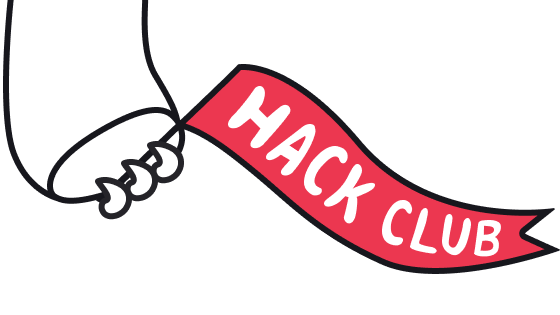

Education
CTFT
I saw teachers doing the same repetitive data work for weeks. So I built CTFT. It compares data and generates reports in a few clicks, so they get time for teaching instead of paperwork.
View project
Class 11 student and developer
I am a class 11 PCM student from Delhi, India. I like building things. This site has my projects and a bit about me.
Hi, I am Nitik Paswan. I am a class 11 PCM student from Delhi and I am the tech buddy of everyone I know.
I am not a serious guy at all. I joke in the middle of everything and I cannot sit still. My attention jumps from one thing to another every five minutes. I am a super ADHD kid and I am fine with it now.
I like art, music, tech and electronics. Not one of them, all of them together. People call that distraction. I think it is just being interested in everything.
Since I was a kid I opened every dead gadget in the house. Old radios, remotes, chargers, anything with screws in it. I just wanted to see what was inside. Half of them never worked again after that.
Slowly the same habit moved from gadgets to code, Linux and networks. Now I open software the same way I used to open radios.
I am not special or anything. I am a normal unserious student who likes building things more than talking about them.
My story so far
These are the things I built so far. Small, but they work.
I saw teachers doing the same repetitive data work for weeks. So I built CTFT. It compares data and generates reports in a few clicks, so they get time for teaching instead of paperwork.
View projectI wanted to see what actually happens when a domain gets looked up. So I built a DNS and network inspection tool to check records and learn how it works.
View projectSay hi if you want to talk or show me something you built. I reply to almost everything. LinkedIn has the more formal version of me.
Email: nitikpsn@email.com
GitHub: github.com/Nitikpsn
LinkedIn: Nitik Paswan